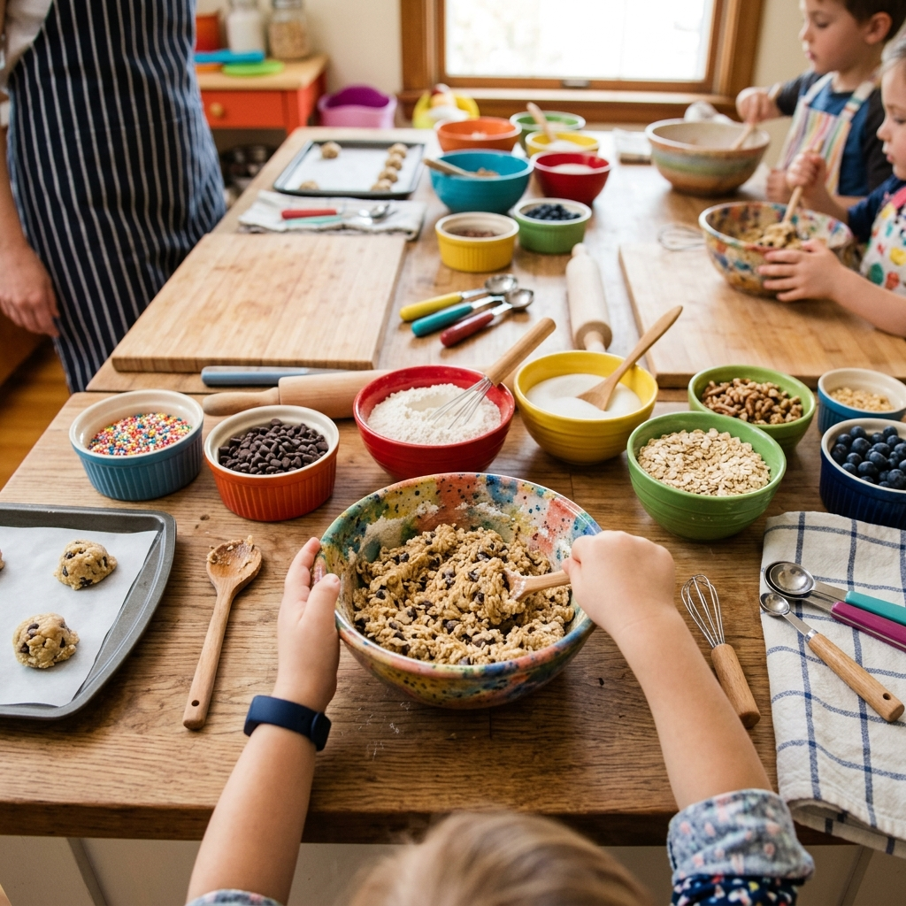
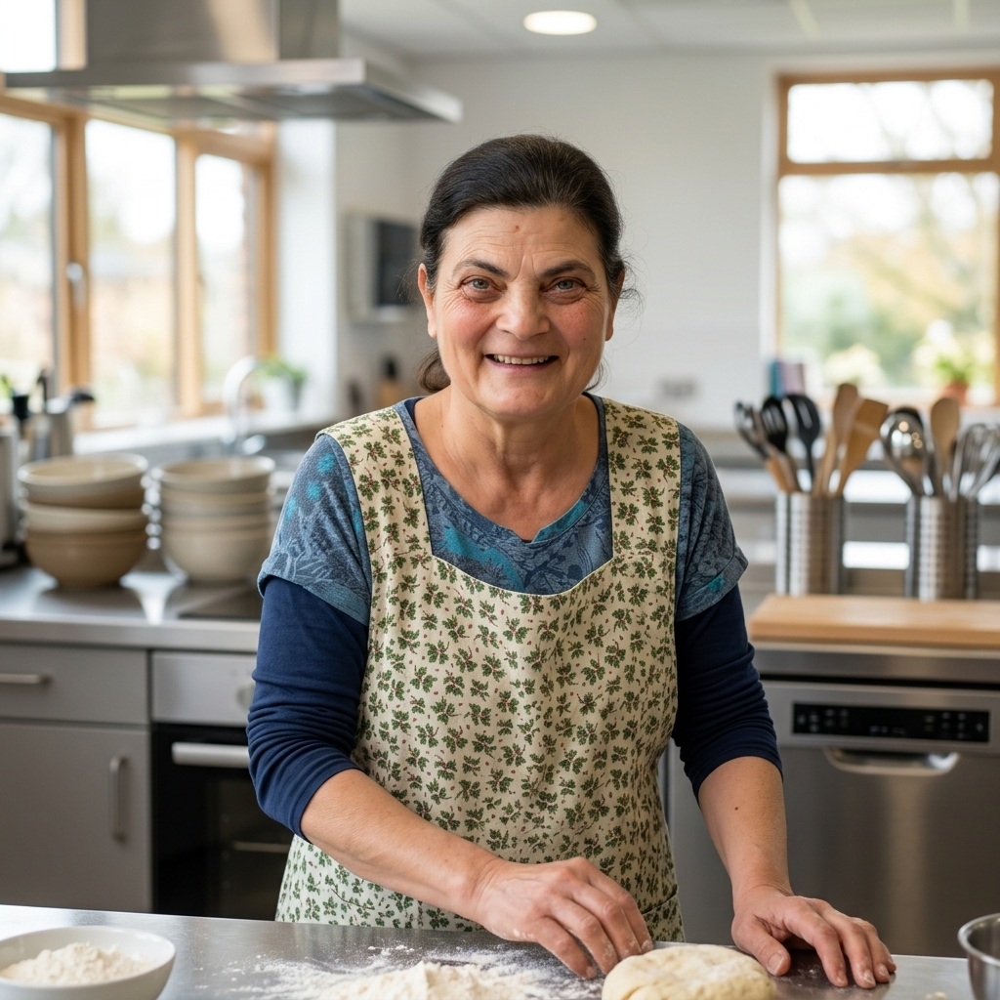
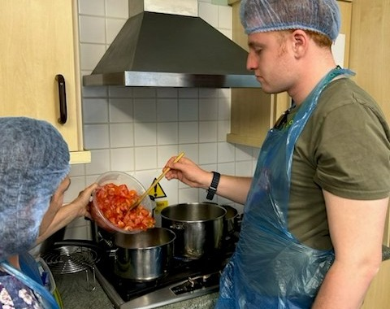
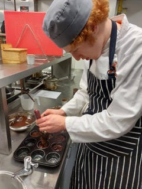
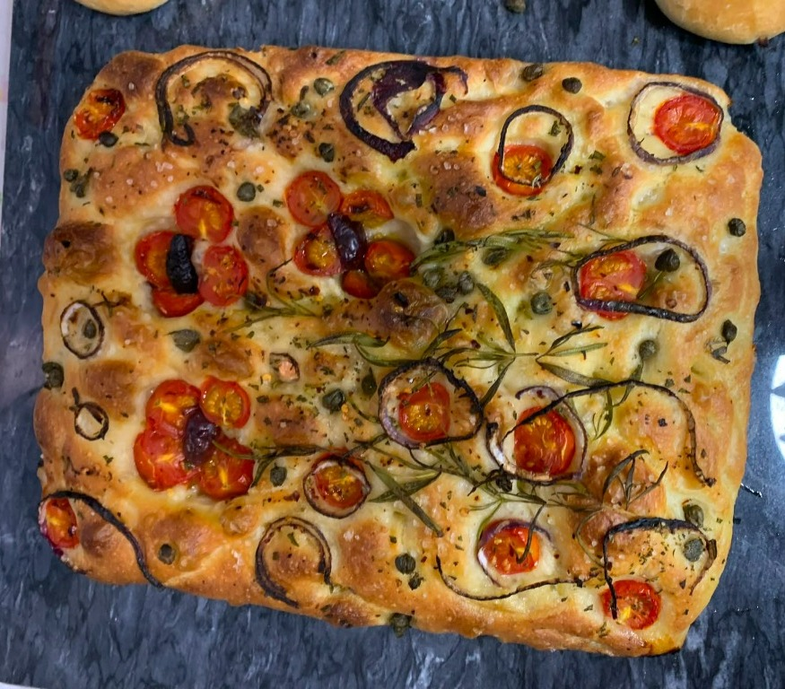
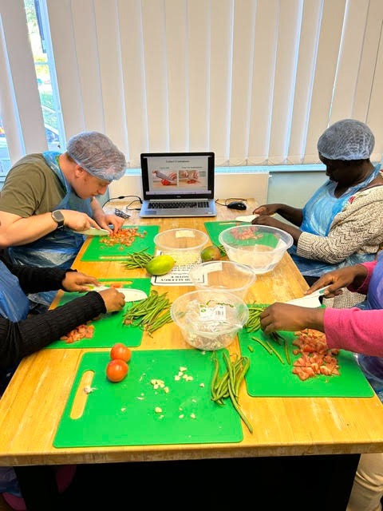
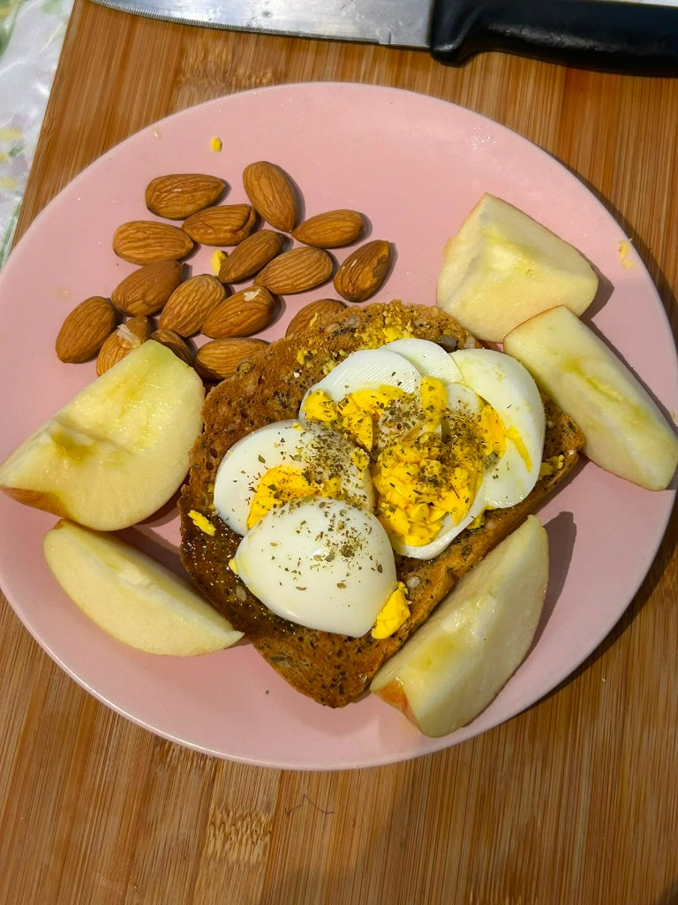
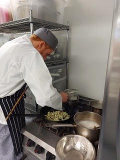
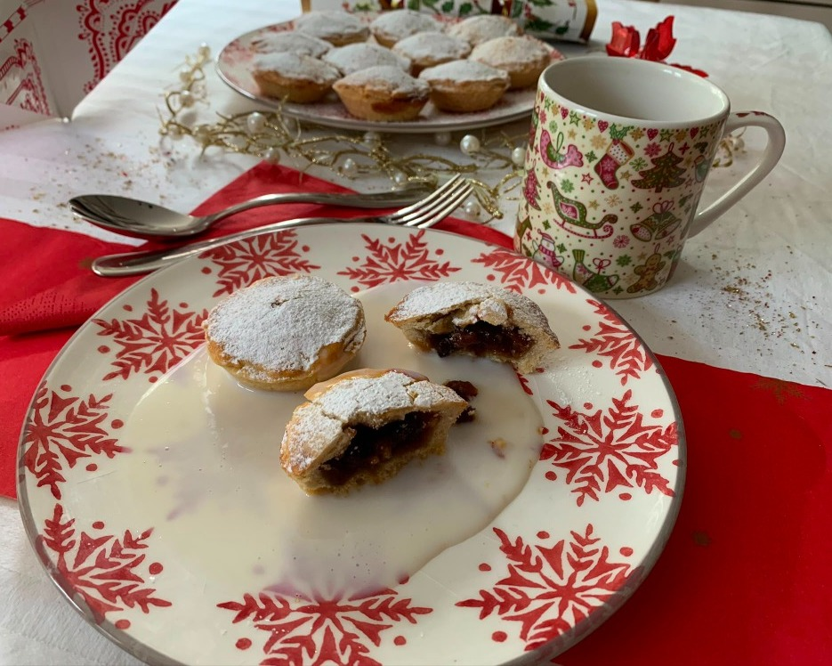

1. Enquire
Send us a short message using our form below to tell us whether you are looking for group classes, 1-to-1 mentoring, or school provision.
Personalised online and in-person culinary sessions for children, young people, and adults with Special Educational Needs—led by experienced SEN educators and specialist chefs.

Getting started is gentle, predictable, and tailored around your household or school routine.
Send us a short message using our form below to tell us whether you are looking for group classes, 1-to-1 mentoring, or school provision.
Enjoy a relaxed 15-minute chat with Cookery Chef Anna to discuss sensory preferences, favourite foods, and any adaptations needed.
Receive your visual symbol guide ahead of time and join us online or in person to cook at a calm, unhurried pace.
Supportive, step-by-step culinary experiences designed for children, young people, and adult SEN learners.

Interactive online group sessions paced gently with visual aids, helping learners explore textures and build confidence within a small community.


Tailored on-site culinary workshops designed for SEN schools, alternative provision, colleges, and specialist resource bases across London.
Consistent weekly windows to support routine building and predictable transitions.
Available for 1-to-1 mentoring sessions and free 15-minute sensory consultations.
[ADD PUBLIC GOOGLE CALENDAR URL]
We support children, young people, and adults with diverse learning profiles—adapting every step so learners feel safe, capable, and respected.
Every recipe is broken down into clear, symbol-supported steps so learners know what is happening now and what comes next—reducing cognitive overload.
Whether a learner prefers touching dough directly, using a silicone spatula, or smelling herbs first, there is no pressure to touch anything before they are ready.
We guide families and schools on colour-coded non-slip boards, nylon safety knives, and easy-grip tools that build fine motor confidence safely.
Drawing on Cookery Chef Anna’s 25+ years in SEN and Dance Movement Therapy, we go at your learner's pace with calm, rhythmic transitions.
Feedback from parents, carers, and SEN educators across our cooking sessions.
"[ADD REAL TESTIMONIAL 1 — e.g. Parent quote about their child's confidence and enjoyment in the online Sensory Cooking Group.]"
"[ADD REAL TESTIMONIAL 2 — e.g. Carer quote about how Fridge-Friendly 1-to-1 mentoring helped reduce mealtime and kitchen anxiety.]"
"[ADD REAL TESTIMONIAL 3 — e.g. SENDCO or Head of Inclusion quote about a London school workshop or college life-skills programme.]"
Authentic snapshots of learners building culinary skills, exploring sensory ingredients, and sharing proud moments in the kitchen.

Cookery Chef Anna guiding a learner step-by-step while preparing a fresh tomato sauce at the hob.

Practising hand-eye coordination and portion control while spooning chocolate mixture into baking trays.

A tactile bake where learners dimple soft bread dough and press in aromatic rosemary, tomatoes, and olives.

Calm, structured group preparation using colour-coded chopping boards and digital visual prompts.

Exploring bright colours and textures with clear bowls, safe tools, and step-by-step visual guidance.

Everyday life skills in action: sliced boiled egg on seeded toast with fresh apple wedges and almonds.

Developing safe hob management and independent cooking techniques in a calm, supportive setting.

Learners plating their finished mango chicken curry alongside our large-format visual recipe screen.

Celebrating seasonal traditions with handmade shortcrust pastry, dusted icing sugar, and table presentation.
Experienced SEN educators and culinary specialists fostering independence, sensory confidence, and practical life skills.

Co-Founder & SEN Cookery Chef
Italian chef, trained Dance Movement Therapist, and SEN educator with over 25 years of experience supporting children, young people, and adults—including learners with PMLD. Anna teaches at Capital City College Group in London and leads our sensory-friendly recipes and mentoring sessions.

Co-Founder & Specialist SEN Educator
Specialist SEN teacher and 1-to-1 tutor with over 14 years of experience supporting neurodivergent learners across classrooms and home settings. Lucas shapes our visual learning resources, structured routines, and family communication so every learner feels prepared and supported.
I grew up in Italy in a home where cooking was part of everyday life and joy. Experimenting beside my grandmother, I discovered flavours, textures, and the tactile pleasure of creating something with my hands—a traditional foundation that still guides my teaching today.
Moving to London in 1986, I trained as a Dance Movement Therapist and spent over 25 years working with SEN children and adults across schools, colleges, nursing homes, and hospitals. I combine movement, sensory regulation, and kitchen creativity to help learners connect with their bodies and build motor confidence.
Specialising in inclusive education, I teach cookery and essential life skills to both mainstream and SEN audiences, including learners with PMLD (Profound and Multiple Learning Disabilities), at Capital City College Group in London.
Beyond the kitchen, Anna is the author of the children's book The Eagle and the Parakeets, weaving themes of inclusivity, bravery, and friendship that reflect the values she brings to every cooking session.
"Cooking is not just about following a recipe—it is about rhythm, sensory comfort, and celebrating what each learner can do at their own pace."
Free step-by-step, print-friendly visual recipes with clear symbols to practice independent cooking at home.

Fun, colourful, and gentle to make—a great recipe for practising mixing, rolling, and shape cutting.
View the Sensory Star Cookies Recipe
A rustic fruit pie with a bright cherry filling and a step-by-step guide to weaving a pastry lattice top.
View the Heart Lattice Pie Recipe
A wonderful rhythmic, tactile recipe for exploring warm dough and baking a fresh loaf at home.
View the Anna's Easy Bread RecipeClear answers to help you decide whether our sessions are right for your learner or school.
You only need a laptop, tablet, or phone with an internet connection and Zoom (or Microsoft Teams on request) placed safely on a kitchen counter where the learner can see the screen. We email a printable visual symbol sheet before every session so you can also follow along on paper.
No—cameras and microphones are completely optional in our group sessions. Many learners prefer to watch with their camera off or angle the camera only at their chopping board and hands rather than their face. For 1-to-1 sessions, angling the camera toward the worktop helps our chef give safe kitchen guidance. [CONFIRM IF CAMERA-ON WORKTOP VIEW IS REQUIRED FOR SAFETY IN 1-TO-1]
We support children (from age 6+), teenagers, young people, and adults across a wide range of learning and sensory profiles, including Autism, ADHD, Dyspraxia, Down syndrome, speech and language differences, and PMLD (Profound and Multiple Learning Disabilities). [CONFIRM EXACT MINIMUM AGE FOR ONLINE GROUPS]
We go at your learner's pace with no pressure. If they prefer to simply watch, smell one ingredient, or take a break while a parent or carer continues, that is warmly welcomed. Every small interaction with food counts as progress.
Yes—for all online sessions, a responsible adult must remain in the kitchen or within immediate reach to supervise oven, hob, and sharp-tool safety. For in-person London home visits, a parent or carer must also remain on the premises throughout the visit. [CONFIRM SUPERVISION POLICY]
We understand that health and sensory regulation needs can change unexpectedly. Sessions can be rescheduled or cancelled with at least 24 hours' notice at no charge. [CONFIRM NOTICE PERIOD & REFUND TERMS FOR ILLNESS/EMERGENCIES]
Yes, we can provide itemised invoices and session summaries aligned with EHCP life-skills and independence outcomes for families using Local Authority Direct Payments, Personal Budgets, or EOTAS packages, as well as school purchase orders. [CONFIRM INVOICING & LOCAL AUTHORITY PROVIDER STATUS]
Whether you are a parent, carer, adult learner, or school SENDCO, complete our short form below and we will reply within 24 hours.